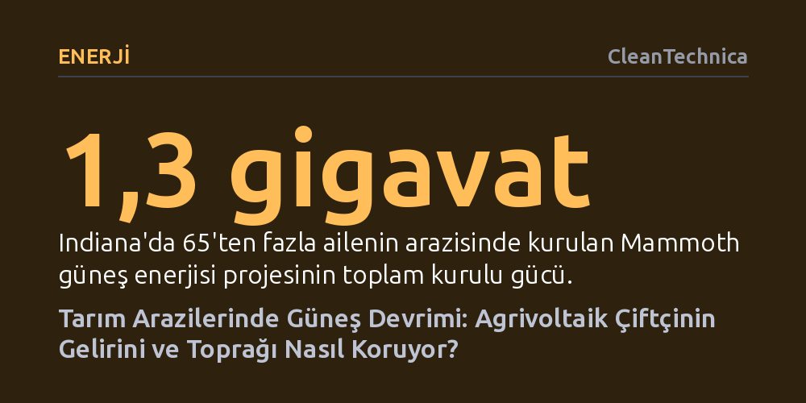

ENERJI · CleanTechnica · 2026-10-12
Güneş panelleriyle tarımı birleştiren agrivoltaik santraller, tarım arazilerini tahrip etmeden elektrik üretimini hızlandırırken çiftçilere yeni gelir kapısı açıyor. Hayvan otlatma ve su tasarrufu gibi ek faydalar sağlayan model, siyasi engellere rağmen kırsal enerji dayanıklılığını artırıyor.
Güneş enerjisi santrallerinin tarım arazilerini yok ettiği algısının aksine, agrivoltaik uygulamalarının gıda üretimini aksatmadan toprağı, suyu ve çiftçi gelirini koruyabildiğini gösteriyor.

Artan elektrik talebi ve fosil yakıt maliyetleri, kırsal bölgeleri hem enerjide hem de tarımda yeni gelir modelleri aramaya yöneltiyor. Bu arayışın en güçlü yanıtlarından biri olan agrivoltaik yaklaşımı, güneş panellerini doğrudan tarım ve otlatma alanlarıyla harmanlayarak aynı topraktan çifte verim almayı mümkün kılıyor. Tarım arazilerini betonlaştırmadan veya kalıcı sanayileşmeye kurban etmeden temiz enerji üreten bu yöntem, çiftçilere düzenli kira ve enerji geliri sağlayarak onları ekonomik dalgalanmalardan koruyor.
Indiana'da Doral Renewables tarafından hayata geçirilen 1,3 gigavatlık Mammoth güneş enerjisi santrali, bu dönüşümün ölçeklenebilirliğini kanıtlayan çarpıcı bir örnek sunuyor. 65'ten fazla yerel ailenin arazisinde yükselen projenin son 900 megavatlık etabı yalnızca 18 ay gibi kısa bir sürede tamamlandı. Indiana Enerji Bakanı Suzanne Jaworowski'nin belirttiği gibi, "Hem ekonomik kalkınmayı çekecek bir enerji altyapısı kurmak hem de bunu yaşam tarzımızı ve tarımsal çevremizi koruyacak şekilde yapmak istiyoruz." Bu yaklaşım, temiz enerjiyi şebekeye hızla bağlarken kırsal yaşamı dönüştürüyor.
Güneş panellerinin tarım arazilerini atıl kıldığı iddialarının aksine, Mammoth sahasında yaklaşık 2.000 baş hayvan otluyor. Koyunlar, eşekler, alpakalar ve kunekune domuzları, panellerin gölgesinde beslenip serinlerken bitki örtüsünün aşırı uzamasını doğal yoldan engelliyor. Bu durum dizel yakıtla çalışan çim biçme makinelerine olan ihtiyacı ortadan kaldırarak hem yakıt masraflarını hem de karbon salımını kayda değer biçimde azaltıyor.
Ekolojik kazanımlar yalnızca hayvan otlatmayla da sınırlı kalmıyor. Wisconsin'deki 1,3 gigavatlık Vista Sands projesinde görüldüğü gibi, güneş santralleri yerli bitki örtüsü ve yaban hayatı restorasyon alanlarına dönüşebiliyor. Proje kapsamında tarımsal sulama için kullanılan 50'den fazla su kuyusunun kapatılması, su stresini azaltırken tarım ilacı ve gübre kaynaklı kimyasalların yeraltı sularına sızmasını önlüyor. Üstelik paneller ömrünü tamamladığında araziye kalıcı hasar vermeden kaldırılabiliyor ve toprak istendiğinde yeniden geleneksel ekime açılabiliyor.
Purdue Üniversitesi liderliğinde kurulan Ortabatı Dayanıklı Topluluklar için Agrivoltaik Konsorsiyumu (MARC), güneş panellerinin enerji güvenliği ve iklim direnci boyutunu mercek altına alıyor. Dolu fırtınaları, kuraklık ya da şiddetli rüzgarlar mahsulü vurduğunda ve elektrik hatlarını kopardığında kırsal topluluklar ağır mali darbeler alıyor. Gıda ve enerjinin aynı sahada birlikte üretilmesi, çiftçinin gelir kaynaklarını çeşitlendirerek aşırı hava olaylarının yıkıcı ekonomik etkilerine karşı bir kalkan oluşturuyor.
Mammoth santralinde kurulan özel araştırma sahasında robotik testler, ileri düzey sensör sistemleri ve alternatif ürün denemeleri yürütülüyor. Enerji ve tarım sektörlerinin bu ortaklığı, yerel ağır sanayiye de can suyu veriyor; Mammoth projesinin panel taşıyıcı altyapısı için Indiana çelik endüstrisinden 20.000 ton çelik tedarik edildi. Böylece tarım, enerji ve imalat sektörleri birbirini besleyen entegre bir ekosisteme dönüşüyor.
Agrivoltaik projelerinin sunduğu somut ekonomik ve çevresel faydalara rağmen, Washington'daki siyasi kararlar temiz enerjinin kırsaldaki yayılışını yavaşlatıyor. Federal düzeyde güneş santrallerinin tarım arazilerini yok ettiği yönündeki temelsiz iddialar, ABD Tarım Bakanlığı'nın kırsal temiz enerji programı REAP kapsamındaki hibe ve düşük faizli kredi kurallarını sertleştirmesine yol açtı.
Bakanlığın getirdiği kısıtlamalar yalnızca yeni projelerin önünü kesmekle kalmadı; daha önce hak kazanmış çiftçilerin ödemelerini de geriye dönük olarak durdurdu. Bu durum binlerce kırsal üreticiyi beklenmedik borç yükleriyle karşı karşıya bıraktı. Çevre ve kamu hukuku örgütleri ise çiftçileri korumak ve bu hukuksuz kısıtlamaları iptal ettirmek amacıyla federal yönetime karşı yargı yoluna başvurmuş durumda.